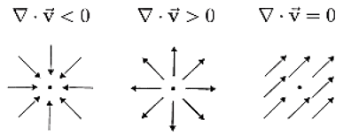

Navier-Stokes equations for a hydrostatic ocean on the rotating sphere

- Reynolds averaging has been done already, and \(k\) is turbulent diffusivity
- \(f = 2\Omega \sin\Theta, \text{ where } \Omega = \frac{2\pi}{\text{day}} = \frac{2\pi}{86400 \, \text{s}} \text{ and } \Theta \text{ is latitude}\)
- For now, we avoid using the spherical coordinate system, so we use Taylor \( f(x) \approx f(x_0) + f'(x_0)\Delta x \) to approximate f:
\(
f = f_{o} + \left. \frac{\partial f}{\partial \theta} \right|_{\theta_{o}} \Delta \theta
+ \left. \frac{\partial^{2} f}{\partial \theta^{2}} \right|_{\theta_{o}} \frac{\Delta \theta^{2}}{2} + \cdots
= 2 \Omega \sin \theta_{o} + 2 \Omega \cos \theta_{o} (\theta - \theta_{o}) + \mathcal{O}(\Delta \theta^{2})
= \boxed{f_{o} + \beta y}
\)
- Zonal (East–West) Momentum Equation:
\[
\frac{\partial u}{\partial t} + \vec{u} \cdot \nabla u - fv
= -\frac{1}{\rho_0} \frac{\partial p}{\partial x} + \nu \nabla^2 u
+ \underbrace{F^x}_{\substack{\text{External forcing in the $x$-direction} \\ \text{(typically wind stress $\tau^x$)}}}\]
- Meridional (North–South) Momentum Equation:
\[\frac{\partial v}{\partial t} + \vec{u} \cdot \nabla v + fu
= -\frac{1}{\rho_0} \frac{\partial p}{\partial y} + \nu \nabla^2 v
+ \underbrace{F^y}_{\substack{\text{External forcing in the $y$-direction} \\ \text{(typically wind stress $\tau^y$)}}}\]
- Hydrostatic Balance (Vertical):\[\frac{\partial p}{\partial z} = -\rho g
\]
- Continuity (Incompressibility):
\[
\nabla \cdot \vec{u} = \frac{\partial u}{\partial x} + \frac{\partial v}{\partial y} + \frac{\partial w}{\partial z} = 0
\]
◀
▶